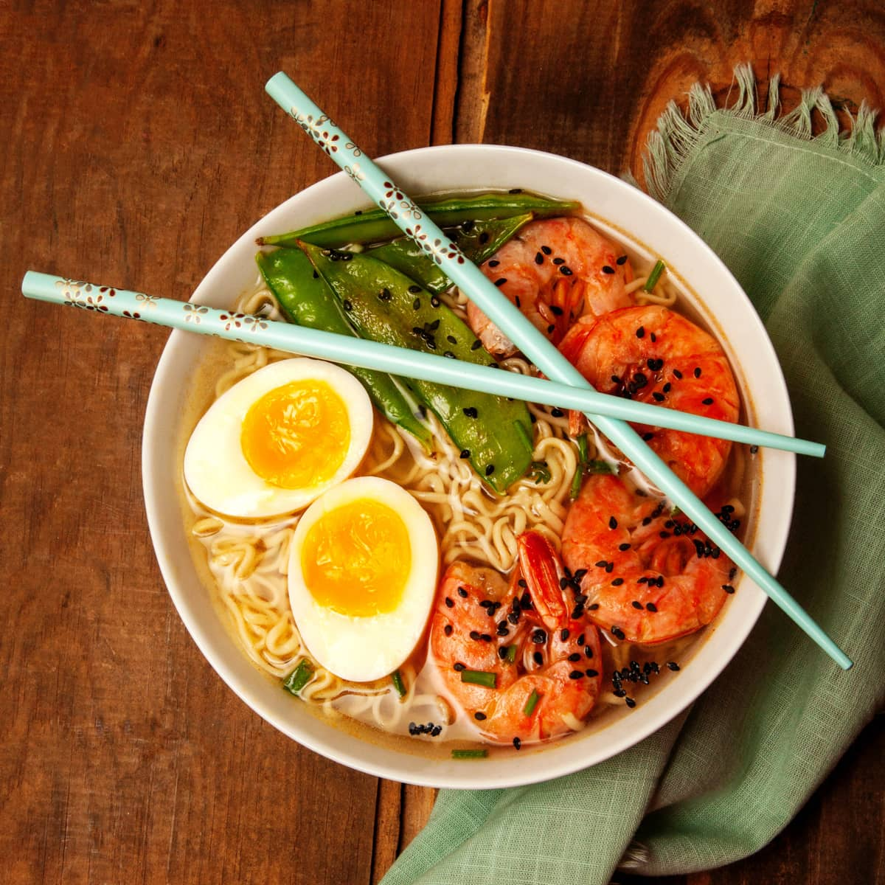

Shrimp Noodle Soup

Boiled Egg and Shrimp Noodle Soup
Instant ramen becomes a thing of the past with this quick and nutritious
homemade take on the convenience staple. Full of veggies and shrimp, this
recipe comes together in 30 minutes, making it a winter weeknight classic.
Ingredients
- 2 Tbsp olive oil, divided
- 1.5lbs. 41/60 count shrimp, peeled and deveined
- 1/2 cup onions, chopped
- 3/4 cup carrots, chopped
- 3/4 cup red bell peppers, chopped
- 2 cups bok choy, cut into 1-inch pieces
- 2 tsp fresh ginger, grated
- 4 cloves garlic, minced
- 6 cups low-sodium vegetable broth
- 1 Tbsp sriracha
- 3 Tbsp tamari
- 2 Tbsp brown sugar
- 2 Tbsp lime juice
- 3 (3 oz) packages ramen, seasoning packets discarded
- 4 large soft-boiled eggs
- 1 Tbsp fresh cilantro, chopped (garnish)
Steps
-
In a medium skillet, heat 1 tablespoon olive oil over medium heat. Add
the shrimp and season with salt and pepper. Cook 1-2 minutes on each
side, until firm and pink. Set aside.
-
In a large pot, heat 1 tablespoon olive oil over medium-high heat. Add
onions, carrots, peppers and bok choy. Cook 3-4 minutes, then add ginger
and garlic.
-
Add broth, sriracha, tamari, brown sugar and lime juice. Stir to
combined and bring to a boil. Reduce heat and allow to simmer 8 minutes.
-
Add the ramen noodles and shrimp. Cook for 2-3 minutes, until noodles
are tender.
-
Divide among 4 bowls. Top each with eggs and fresh cilantro. Serve.